Nouvelles ressources
Mes nouvelles fiches apparaissent ici en premier. La liste se met à jour automatiquement.
48 ressources
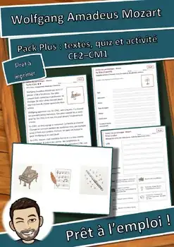
Atelier des personnages : Mozart – Fiche à lire et à compléter, CE2–CM1 (gratuit)
Atelier des personnages : Mozart – Pack Plus avec textes à 3 niveaux, quiz et activité, CE2–CM1
Atelier des personnages : Mozart – Pack Plus avec textes à 3 niveaux, quiz et activité, CE2–CM1
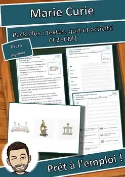
Atelier des personnages : Marie Curie – Fiche à lire et à compléter, CE2–CM1 (gratuit)
Atelier des personnages : Marie Curie – Pack Plus avec textes à 3 niveaux, quiz et activité, CE2–CM1
Atelier des personnages : Marie Curie – Pack Plus avec textes à 3 niveaux, quiz et activité, CE2–CM1
Atelier d’images-mots : Les animaux domestiques – jeu de mémoire images et mots (GRATUIT), CP-CE2
Atelier d’images-mots : Les animaux domestiques – jeu de mémoire images et mots (GRATUIT), CP-CE2
Atelier d’images-mots : Les animaux domestiques – cartes images et mots, phrases modèles (GRATUIT)
Atelier d’images-mots : Les animaux domestiques – cartes images et mots, phrases modèles (GRATUIT)
Atelier d’images-mots : Les émotions – jeu de mémoire images et mots (GRATUIT), CP-CE2
Atelier d’images-mots : Les émotions – jeu de mémoire images et mots (GRATUIT), CP-CE2
Atelier d’images-mots : Les émotions – cartes images et mots, phrases modèles (GRATUIT), CP-CE2
Atelier d’images-mots : Les émotions – cartes images et mots, phrases modèles (GRATUIT), CP-CE2
Atelier d’images-mots : Les animaux domestiques PLUS – cartes à pince, phrases à trous, contrôle
Atelier d’images-mots : Les animaux domestiques PLUS – cartes à pince, phrases à trous, contrôle
Atelier d’images-mots : Les émotions PLUS – cartes à pince, phrases à trous, contrôle, CP-CE2
Atelier d’images-mots : Les émotions PLUS – cartes à pince, phrases à trous, contrôle, CP-CE2
Cartes de vacances Renard : mascotte de classe, écriture en 3 niveaux
Cartes de vacances Renard : mascotte de classe, écriture en 3 niveaux
Panneaux de groupe Renard : mascotte de classe et cartes de rôle, CP-CM1
Panneaux de groupe Renard : mascotte de classe et cartes de rôle, CP-CM1
Cartes de vacances Hibou : mascotte de classe, écriture en 3 niveaux
Cartes de vacances Hibou : mascotte de classe, écriture en 3 niveaux
Panneaux de groupe Hibou : mascotte de classe et cartes de rôle, CP-CM1
Panneaux de groupe Hibou : mascotte de classe et cartes de rôle, CP-CM1
Cartes de vacances Lion : mascotte de classe, écriture en 3 niveaux
Cartes de vacances Lion : mascotte de classe, écriture en 3 niveaux
Panneaux de groupe Lion : mascotte de classe et cartes de rôle, CP-CM1
Panneaux de groupe Lion : mascotte de classe et cartes de rôle, CP-CM1
Pack mascotte de classe Renard : texte en 3 niveaux, métiers, félicitations
Pack mascotte de classe Renard : texte en 3 niveaux, métiers, félicitations
Pack mascotte de classe Hibou : texte en 3 niveaux, métiers, félicitations
Pack mascotte de classe Hibou : texte en 3 niveaux, métiers, félicitations
Pack mascotte de classe Lion : texte en 3 niveaux, métiers, félicitations
Pack mascotte de classe Lion : texte en 3 niveaux, métiers, félicitations
Décris le lutin : écriture descriptive avec 4 images, banque de mots et liste de contrôle (CE2-CM1)
Décris le lutin : écriture descriptive avec 4 images, banque de mots et liste de contrôle (CE2-CM1)
L'histoire de Noël en dominos : 2 versions avec mots-clés et phrases (CE1 à CM1)
L'histoire de Noël en dominos : 2 versions avec mots-clés et phrases (CE1 à CM1)
Lutins de la gentillesse : 24 cartes défis, mots secrets et papiers à tirer (CP à CM1)
Lutins de la gentillesse : 24 cartes défis, mots secrets et papiers à tirer (CP à CM1)
Calendrier de l'Avent de la classe : 24 portes, cartes d'idées et planning (CP à CM1)
Calendrier de l'Avent de la classe : 24 portes, cartes d'idées et planning (CP à CM1)
Énigmes logiques de Noël : 6 défis à la pâtisserie en 3 niveaux (CE2-CM1)
Énigmes logiques de Noël : 6 défis à la pâtisserie en 3 niveaux (CE2-CM1)
Énigmes logiques d'hiver : 6 défis sous la neige en 3 niveaux (CE2-CM1)
Énigmes logiques d'hiver : 6 défis sous la neige en 3 niveaux (CE2-CM1)
Exposition des continents : lot des 7 continents – panneaux et fiches
Exposition des continents : lot des 7 continents – panneaux et fiches
Exposition des continents : Antarctique – panneaux et fiches en 3 niveaux
Exposition des continents : Antarctique – panneaux et fiches en 3 niveaux
Exposition des continents : Océanie – panneaux et fiches en 3 niveaux
Exposition des continents : Océanie – panneaux et fiches en 3 niveaux
Exposition des continents : Amérique du Sud – panneaux et fiches en 3 niveaux
Exposition des continents : Amérique du Sud – panneaux et fiches en 3 niveaux
Exposition des continents : Amérique du Nord – panneaux et fiches en 3 niveaux
Exposition des continents : Amérique du Nord – panneaux et fiches en 3 niveaux
Exposition des continents : Europe – panneaux et fiches en 3 niveaux
Exposition des continents : Europe – panneaux et fiches en 3 niveaux
Exposition des continents : Asie – panneaux et fiches en 3 niveaux
Exposition des continents : Asie – panneaux et fiches en 3 niveaux
Exposition des continents : Afrique – panneaux et fiches en 3 niveaux
Exposition des continents : Afrique – panneaux et fiches en 3 niveaux
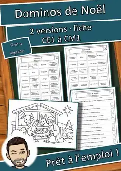
L'histoire de Noël en dominos : 2 versions, mots-clés (CE1-CM1) GRATUIT
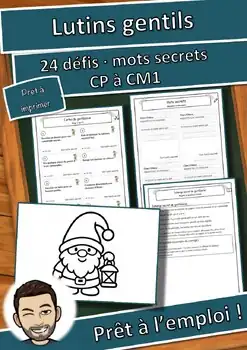
Lutins de la gentillesse : 24 défis et mots secrets (CP-CM1) GRATUIT
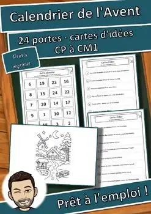
Calendrier de l'Avent de la classe : 24 portes, idées (CP-CM1) GRATUIT
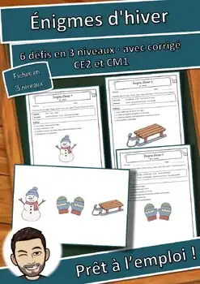
Énigmes logiques d'hiver : 6 défis, 3 niveaux (CE2-CM1) GRATUIT
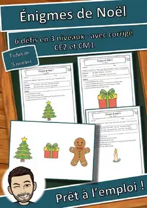
Énigmes logiques de Noël : 6 défis, 3 niveaux (CE2-CM1) GRATUIT
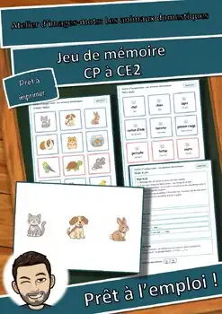
Atelier d’images-mots: Les animaux domestiques – Jeu de mémoire (GRATUIT)
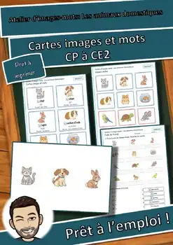
Atelier d’images-mots: Les animaux domestiques – Cartes images et mots (GRATUIT)
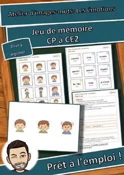
Atelier d’images-mots: Les émotions – Jeu de mémoire (GRATUIT)
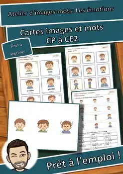
Atelier d’images-mots: Les émotions – Cartes images et mots (GRATUIT)
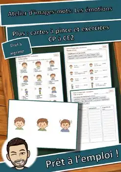
Atelier d’images-mots: Les émotions – Plus : cartes à pince et exercices

Cartes de vacances Renard : mascotte de classe, 3 niveaux | Français

Panneaux de groupe Renard : mascotte de classe, cartes de rôle | Français
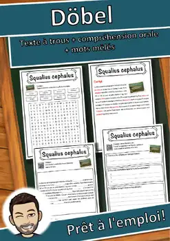
Döbel – Fiche de lecture : texte à trous, compréhension orale et mots mêlés

Cartes de vacances Hibou : mascotte de classe, 3 niveaux | Français

Panneaux de groupe Hibou : mascotte de classe, cartes de rôle | Français
Aucune ressource trouvée – essaie un autre mot ou un autre filtre.